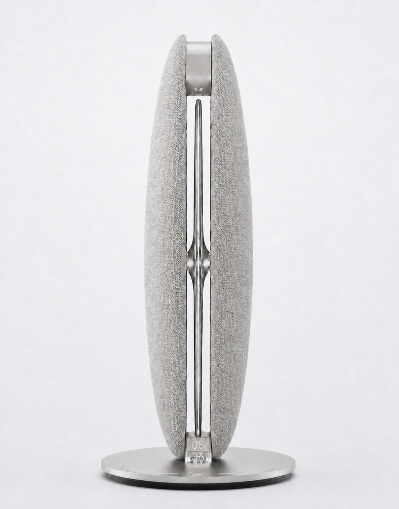

01 / Set it down
01 / Set it downSense
Place LunaWake at the bedside, facing you. Contact-free signals follow breathing-related movement and presence across the night.
LunaWake / bedside intelligence
A sleep companion that senses the night, follows your rhythm, and helps you wake with intention.
The LunaWake system
From wind-down to wake-up, LunaWake is designed to be present without asking you to wear, watch, or measure yourself.
How it works
Three quiet steps connect the device, the app, and your morning. The system is built around observable interactions — not promises of diagnosis or treatment.
01 / Set it downPlace LunaWake at the bedside, facing you. Contact-free signals follow breathing-related movement and presence across the night.
 02 / Live signals
02 / Live signalsThe Luna App makes the night legible: real signals, clear context, and a calmer view of how your routine is moving.
 03 / Gentle rise
03 / Gentle riseLight and sound rise with the wake window, then meet the hard deadline you set. A routine, not just an alarm.
The device
LunaWake is a considered bedside object: warm light, quiet sound, contact-free sensing, and a physical privacy switch you can see and trust.
Explore finishesNo ring. No watch. No skin contact.
A physical switch controls acoustic sensing at the hardware level.
A gradual transition into and out of sleep.
Set it down, plug it in, and let the routine run.
Choose your finish
Three material directions, one LunaWake experience. Select a finish to see the product render in its lit state.
AmberWarm textile, warm light.
Luna App
Simple controls when you want them. Clear context when you check in. The app turns the bedside system into a routine you can understand.


Breathing, sound, and pace are shaped into a small routine that can fade into the background.
Choose a target and a hard deadline. LunaWake handles the space in between.
Signals become context across nights, with language that helps you notice and adjust.

Working prototype / lighting and sound previewSleep Lab
We are testing the system in real rooms and real routines: what bedside signals can tell us, how wake experiences should feel, and how to talk about sleep without overclaiming.
Can contact-free signals be useful without being intrusive?
What makes a wake-up feel gentle and dependable?
How can insights stay human and non-diagnostic?
Questions, answered
We are early, so clarity matters. Here is what LunaWake is designed to do — and where we are still learning.
No. LunaWake is a bedside system, with no ring, watch, or sensor on your body.
No. LunaWake is designed without a camera. Its microphones are used only for passive acoustic sensing, not voice commands, text-to-speech, or conversation. The physical privacy switch cuts off acoustic sensing at the hardware level.
LunaWake is designed to notice contact-free signals such as movement, presence, and breathing-related patterns. Acoustic events are recorded locally for a morning summary. It is not a medical diagnostic system.
No. LunaWake is a consumer sleep companion. It does not diagnose, treat, or prevent any condition. Clinical validation is in progress.
Join the launch list for product updates, testing opportunities, and availability news.